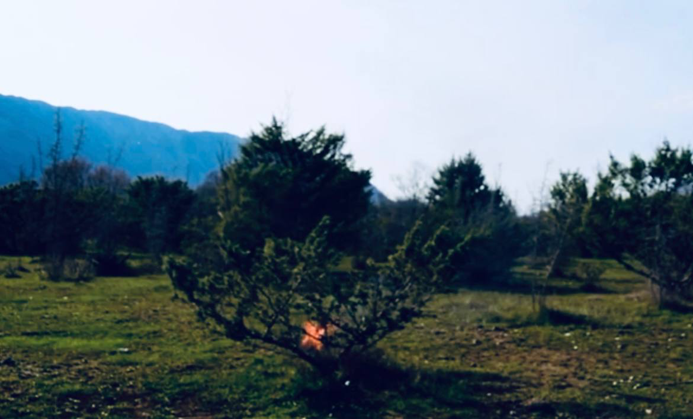
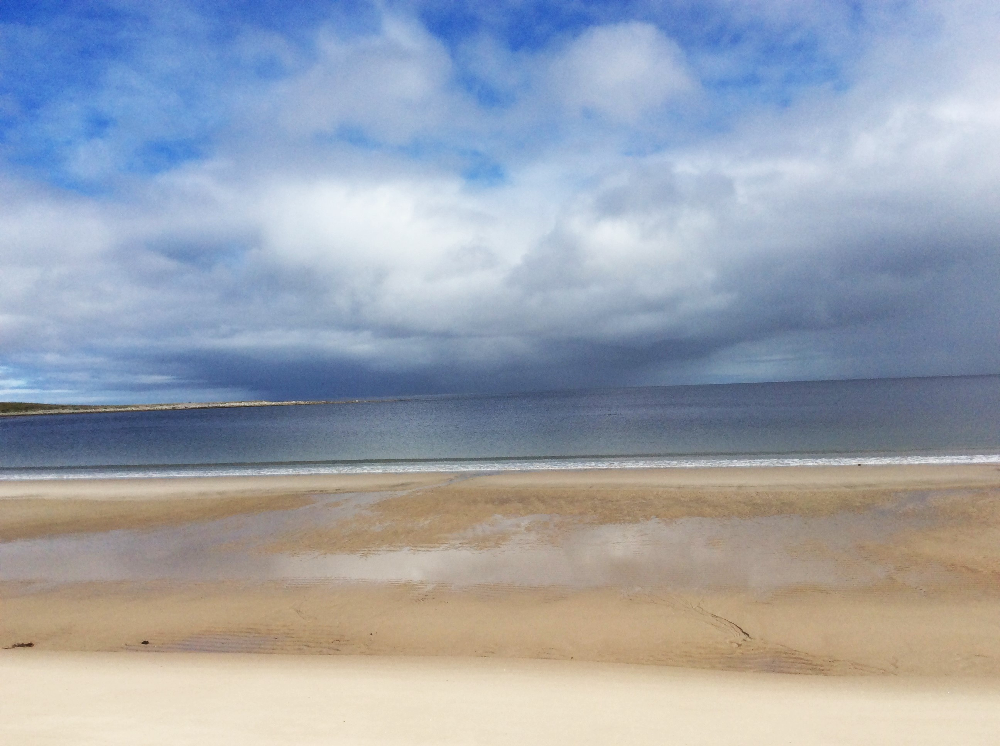

С 2005 года Максим Тужиков работает в академических учреждениях, в том числе в лаборатории профессора Топчиева над методами аэрокосмического зондирования, проектом «Биосфера ТМ» и др. Позже он работал в лаборатории доктора Владимира Дубовского в Институте физики Земли Российской академии наук. Максим Тужиков организатор многолетних экспедиций на Кавказ, Соловки, Альпийских экспедиций. Он также известен своими работами в области научной визуализации и просветительской деятельности.
В 2021 году, по личным обстоятельствам, он прекратил академическую деятельность и работает в области теории искусства и фотоискусства. Под художественным руководством легендарного искусствоведа, академика РАХ Владимира Десятникова им созданы серии работ представленные на персональных и коллективных выставках, состоявшихся в галерее «Маковец» (Сергиев) и других частных галереях Москвы.

К наиболее значимым художественным проектам Максима Тужикова следует отнести работы серии «Анзерский берег» – глубокого погружения в ландшафты Соловецкого архипелага, выходящего за рамки документального пейзажа, превращающееся в свидетельство любви к заветной Земле. Другим художественным жестом Максима стала выставка «Земля покоя», объединившая пространство острова Анзер, Кавказа и Ближнего Востока, где ландшафт и духовность переплелись в единую симфонию.

К числу теоретических работ Тужикова следует отнести серию публикаций об онтологических проблемах современного искусства. С присущей ему убедительной диалектической ясностью он показал, что деградация окружающей среды является неизбежным следствием общего прогресса человечества – что в свою очередь привело его к формированию эстетики антропоцена, нашедшей своё отражения в его художественных работах.
Основные академические работы: Topchiev A. G., Tuzhikov M. E. Information and analytic system of analyzing and predicting the conditions of environmental and technogenic systems on the basis of the method of local airborne monitoring //ISJAEE. — 2009. — № 9 (77). — P. 163–168.; Тужиков М. Е. Остров Анзер — место уединения и мученичества : доклад на XXIV Международных Рождественских образовательных чтений (Москва, 27 января 2016 г.); Fantin, E., Tuzhikov, M. Noosphere and masses. 2023, September 7; Тужиков М. Е. Сремски-Карловци — духовный центр русской эмиграции в межвоенный период : XVII Международная научная конференция «Люди и судьбы русского зарубежья» (Москва, 16–17 мая 2025 г.) // Материалы конференции / Институт всеобщей истории РАН; Sremski Karlovci - the spiritual center of Russian emigration (in the interwar period) | Zenodo
Максим Тужиков-Камошвили является членом объединения художников “Маковец”, действительным членом Русского географического общества. Его работы находятся в галереях и частных коллекциях России, Италии и Грузии.